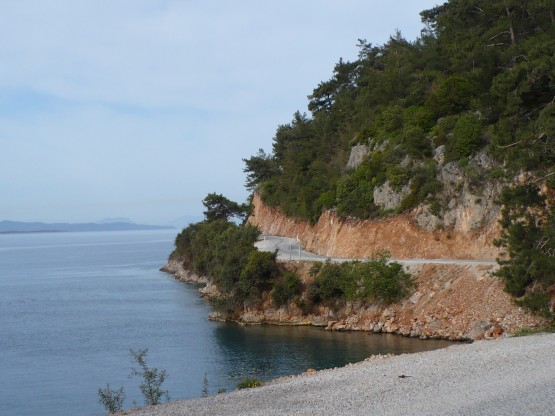
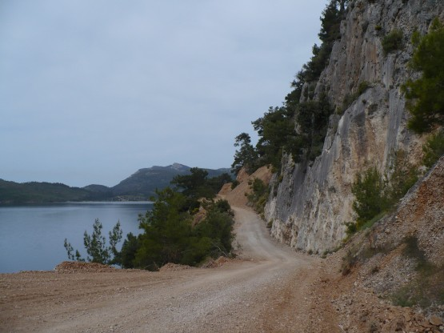
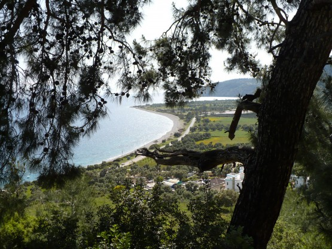

17 апреля
Долго смотрел на GPS и на дорогу вдоль моря, опять на GPS и опять на дорогу. Ну, нету ее, этой дороги в GPS! Решил верить своим глазам и поехал по дороге вдоль самого берега моря. Редкой красоты, надо сказать, дорога.
Дорога вдоль моря:

Дорога то поднималась, то опять спускалась к морю. Асфальт закончился, началась грунтовка, а вскоре и строящийся участок.
Грунтовка:

Стало понятно, почему дороги нет на карте.
Однако, проехать получилось. Ближе к Керамосу опять начался асфальт.
Пляжей в тех местах маловато, но искупаться получилось. Вода напоминала нашу Ладогу летом, благо светило солнце и температура воздуха располагала к купанию.
Пляж:

**
В этот день я пару раз неприятно упал, и виной всему были мои новые педали от прославленной фирмы Кранки Бразерс. Ну не они одни, конечно, во многом виновата моя дурья башка, которая не придала значению, тому, что на рамке левой педали в первые же дни остались глубокие царапины. Надо быть внимательнее и не рисковать так, как я. Оказалось, что проблема не косметическая, а вполне даже серьезная. Рамку на левой педали забыли закалить! И через несколько дней похода ее сильно повело, а царапины превратились в глубокие борозды. В итоги левая нога отстегивалась примерно через раз.
Если на асфальте я с этим успешно боролся, отстегивая правую, то на грунте получалось не всегда, особенно на подъемах, когда скорость минимальна.
В один из дней приключился курьезный случай. Решил я отклониться от маршрута и заехать по грунтовому серпантину на высокий холм, где виднелись некие развалины.
Заехал наверх. Сидят местные ребята пасут баранов, курят. Останавливаюсь на краю горизонтальной площадки, дергаю ногу, дергаю, падаю. Велосипед с рюкзаком лежит на горизонтальной площадке, а я вишу вниз головой на склоне. От соскальзывания вниз меня удерживает неотстегнувшийся контакт. Так. . . . Думаю. . . если начну дергаться, то велосипед начнет равноускоренное движение вниз вместе со мной. . . Тут контакт отстегивается и я начинаю скользить вниз на спине но без велосипеда. . . Ура!. . . однако ускоряюсь. Переворачиваюсь через голову и торможу о сыпуху четырьмя костями. Вылезаю наверх. Местные сидят в тех же позах. Вспоминается "Белое солнце пустыни" - "Давно тут сидим"
Однако я отвлекся. В этот день посмотрел Керамос. Удивило, как современный город поглотил древние развалины. То есть древние стены используются как стены современных домов. В следующие дни неоднократно встречал подобное. Каждый раз было жалко на это смотреть.
**
Яркие воспоминания остались от неожиданно появляющихся у дороги древностей.
Благо их там действительно много.
Остатки древнего водопровода. 
Дальше поехал через хребет Яран на Караова, там загадочным образом пропустил поворот на горную дорогу ведущую в Бодрум и выскочил на берег залива Гюллюк в 20 км от Бодрума, темнело, на компе 107 км пути. Ничего не оставалось, как стать на узкой полосе между шоссе и морем. Как ни странно машин слышно практически не было и меня никто не беспокоил. Справедливости ради надо заметить, что за 2 недели меня побеспокоили в палатке лишь единожды, но об этом позже.